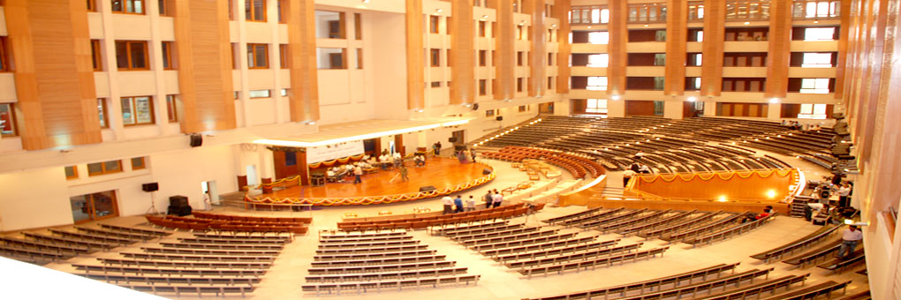

Jaypee Model United Nations 2015

JMUN-2015
“Whatever you do in life will be insignificant but it is very important that you do it,
because nobody else will.”
–Gandhi
JMUN turns five this year. With the success of JMUN 2014 still running in our veins, and as all good things come to an end, so did this. But, the end is just a beginning to another story.
The Secretariat is all prepared to make sure that this year JMUN 2015 turns out to be bigger, better and more enriching !
This year JMUN 2015 is going to focus on issues which plague the world, issues which are deeply rooted, and issues which are grave and heinous in nature. We call the contemplating youth to deliberate on such matters and pave a new way that will lead us out of the chaos and cacophony amidst which we find ourselves day in and day out. We realize we are forcing the coming generations to live under a rule of ‘taxation without representation’ as each day we continue to extract humanity and morality from every corner of the world.
Call the contemplating youth to deliberate on such matters and pave a new way that will lead us out of the chaos and cacophony amidst which we find ourselves day in and day out.
Secretariat knows and believes that change cannot happen overnight but only if we take one step at a time. Model United Nations is our very small step towards inheriting our future and making our destiny. It may not change the world but it will change a person, it will change you.
The secretariat is working out the best possible accommodation and services for our delegates. Keep watching the space for more updates as we move forward towards our final destination.
We are more than honoured to invite each one of you to JMUN 2015 from the 7th to the 8th of February 2015.
Lets stand up once again to make a difference !